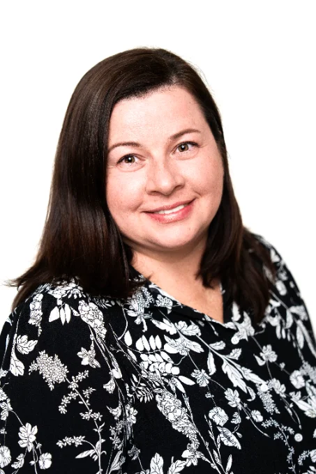

15
{{ t.t1t }}{{ t.t1d }}
3
{{ t.t2t }}{{ t.t2d }}
✓
{{ t.t3t }}{{ t.t3d }}
★
{{ t.t4t }}{{ t.t4d }}
{{ t.s_title }}
{{ t.s_sub }}
{{ t.c1t }}
{{ t.c1d }}
- {{ t.c1a }}
- {{ t.c1b }}
- {{ t.c1c }}
{{ t.c2t }}
{{ t.c2d }}
- {{ t.c2a }}
- {{ t.c2b }}
- {{ t.c2c }}
{{ t.h_title }}
{{ t.h_sub }}
- 1{{ t.h1t }}{{ t.h1d }}
- 2{{ t.h2t }}{{ t.h2d }}
- 3{{ t.h3t }}{{ t.h3d }}
{{ t.d_title }}
{{ t.d_sub }}
{{ t.d1t }}
{{ t.d1d }}
{{ t.d2t }}
{{ t.d2d }}
{{ t.d3t }}
{{ t.d3d }}
{{ t.d4t }}
{{ t.d4d }}
{{ t.d5t }}
{{ t.d5d }}
{{ t.d6t }}
{{ t.d6d }}
{{ t.r_title }}
{{ t.r_sub }}
“{{ t.r1q }}
“{{ t.r2q }}

{{ t.a_title }}
{{ t.a_p1 }}
{{ t.a_p2 }}
{{ t.a_p3 }}
{{ t.a_quote }}
{{ t.v_title }}
{{ t.v_sub }}
{{ t.p_title }}
{{ t.p1t }}
{{ t.p1d }}
{{ t.p2t }}
{{ t.p2d }}
{{ t.o_title }}
{{ t.o_sub }}
{{ t.f_title }}
{{ t.f1q }}+
{{ t.f1a }}
{{ t.f2q }}+
{{ t.f2a }}
{{ t.f3q }}+
{{ t.f3a }}
{{ t.f4q }}+
{{ t.f4a }}
{{ t.f5q }}+
{{ t.f5a }}
{{ t.x_title }}
{{ t.x_sub }}